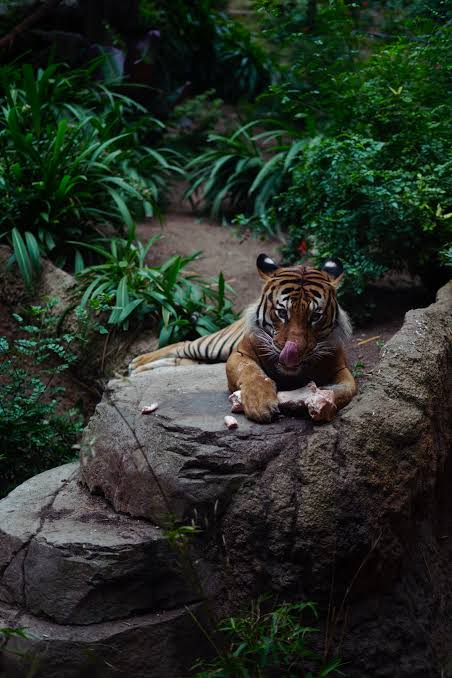

Menjaga Kesehatan Harimau
Kesehatan harimau sangat penting untuk menjaga keberlangsungan hidup dan keseimbangan ekosistem.
Makanan
Harimau membutuhkan makanan yang cukup dan bergizi untuk menjaga energi serta kondisi tubuhnya.
Habitat
Lingkungan yang aman dan memiliki sumber air serta makanan sangat penting bagi kehidupan harimau.
Pemeriksaan
Harimau di pusat konservasi perlu mendapatkan pemeriksaan kesehatan secara berkala.

Pentingnya Menjaga Kesehatan Harimau
Harimau merupakan salah satu predator yang memiliki peran penting dalam menjaga keseimbangan ekosistem. Kondisi kesehatan harimau perlu diperhatikan agar populasinya dapat tetap bertahan.
Faktor yang Memengaruhi Kesehatan
Kesehatan harimau dipengaruhi oleh makanan, air, kondisi lingkungan, aktivitas fisik, serta kondisi habitatnya. Habitat yang baik membantu harimau mendapatkan kebutuhan hidupnya.
Perawatan Harimau
Harimau yang berada di kawasan konservasi dapat mendapatkan pemeriksaan kesehatan secara berkala. Pemeriksaan dilakukan untuk mengetahui kondisi tubuh dan mendeteksi gangguan kesehatan sejak dini.
Menjaga Habitat
Menjaga hutan merupakan salah satu cara penting untuk membantu menjaga kesehatan harimau. Hutan menyediakan tempat berlindung, air, dan sumber makanan bagi harimau.
Kesimpulan
Menjaga kesehatan harimau tidak hanya dilakukan dengan merawat hewannya, tetapi juga dengan melindungi habitatnya. Konservasi dan perlindungan lingkungan sangat penting agar harimau tetap dapat hidup dengan baik.
🌿 Lindungi Habitatnya!
Menjaga hutan berarti ikut menjaga kehidupan harimau dan berbagai satwa lainnya.